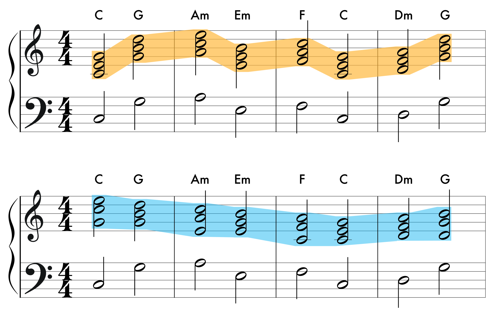
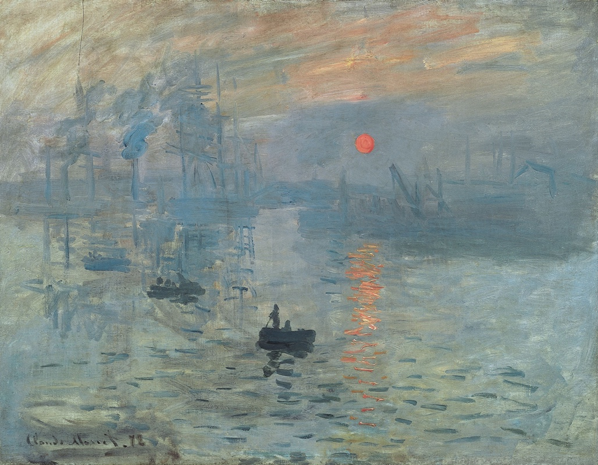
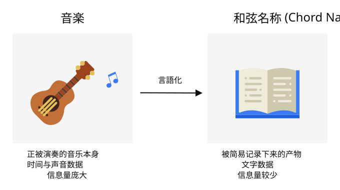

1. 和弦的演奏
1. 和弦的演奏
至此，我们已经打牢了关于基调和弦、和弦代号、和弦音等抽象概念的基础。

对于吉他手来说，只要认清和弦代号，照着按指法弹响即可。但对于键盘演奏者或者使用电脑编曲打谱的人来说，究竟该在什么音高、以何种形式去弹奏这些音，目前还没有展开讲解。
在音乐理论中，将音符配置在不同音高位置来演奏的技巧被称为和弦排列/声部编排（Voicing）。本篇中，我们将探讨将和弦具体“编排配置”时的关键要点。
关于声部排列（Voicing）
和弦各构成音的排列位置究竟怎样才好？结论就是：排列基本上是自由的。即使处于不同八度，其根本的声响特质也不会改变。例如在 C 大和弦中，就算只有“E（咪）”高出了一个八度，听觉上的本质变化并不显著。

因此，和弦代号依然维持“C”不变。不论各音以何种音高发声，只要是由“C-E-G”三个音组成的，该和弦就都被称为“C”。 音的排列既可以紧凑地密集排列，也可以相互拉开距离开离排列。

上述所有的和弦代号全部都是“C”。并不需要由单件乐器演奏出所有的和弦构成音，例如上图的例子中，就是由小提琴、中提琴、大提琴、低音提琴四件乐器协同合作，共同构建出同一个和弦。
叠置音的数量
此外，无论你在不同八度重复叠置多少个 C、E、G，它也不会变成所谓的“四和弦”或“五和弦”。归根结底它们仍然只是“C、E、G”这3个不同音名，因此依然按照通常的“三和弦”处理，和弦代号也依然是“C”。

不过需要注意的是，如果重复叠置过多的音，整体声响可能会变得混浊拥挤，需要多加留意。
把握各音的角色特质
顺便一提，当需要叠加音符、或者反过来必须省略某些音时，回忆一下各个和弦音的职责角色会很有帮助：

根音（Rt）是和弦的基石底色；三音（3rd）主导着明亮/阴暗的声音性格；五音（5th）则是无色透明的支撑。强化突出哪一个音，整体音色的微妙观感也会随之改变。
琶音 / 分解和弦（Arpeggio）
说到和弦，人们脑海中可能会浮现出吉他“刷”地一声“同时”弹响多个音的画面，但实际上，将和弦音拆解成单个音先后弹响，同样能够营造出清晰的和弦感。
就像这样，被细腻错开演奏的和弦音汇聚在一起，便形成了一个完整的和弦听感。像这样具有时间差地先后奏响构成的和弦被称为分解和弦（Broken Chord），通常也被广泛称为琶音（Arpeggio）。
2. 声部连接（Voice Leading）
那么在连接不同和弦时，虽然前面提到音符的高低排列是自由的，但过于自由反而让人不知所措。此时，**声部连接（Voice Leading）**领域的知识便成为了绝佳的行动指南。
声部连接是编曲中的关键学问，研究音符之间如何衔接才能听起来流畅平滑且悦耳优美。深入探究的话，无论是爵士还是古典乐派都总结了极其详尽严谨的规则体系，但那往往过于繁琐。 在这里，我们只介绍最核心的基础精髓。

这是著名的“帕赫贝尔卡农”的和弦进行。如果盲目听从“叠丸子（原位三度叠置）”的说法，将上方声部全部按原位叠置，在现实编曲中是非常罕见的，基本不太可能这样写。低音线条遵循了“贝斯负责演奏根音”的基本原则，因此没问题；但上方声部在实战中通常会采用完全不同的音符配置。

像这样配置不仅听起来更加自然和谐，也是更为标准的范式。究竟做了怎样的调整呢？核心就在于让和弦切换时的音高上下起伏尽可能平缓顺畅。得益于此，即便是简单的伴奏织体，听起来也仿佛隐隐流动着一条优美平滑的旋律线。将两种声部连接的移动轨迹高亮描绘出来，两者的优劣一目了然：


当然，这并不意味着所有音乐都必须时刻保持平缓，也不意味着只要平缓就一定高明。但作为一个通用的审美参照标尺，了解它是必不可少的。在和弦篇第VII章中，我们将极其深入地探讨声部连接的专门学问。掌握那里的知识后，你将能打造出更上一个台阶的优雅声音。
顺便提一下，在本站中，为了讲解浅显易懂，我们在理论说明时多采用基础的“叠丸子”乐谱展示，但也会穿插这种实战中的真实排列谱例，以便大家接触更多实际的排列编配手法。
3. 贝斯声部的演奏法
虽然前面说“排列是自由的”，但有一个基本原则需要牢记在心：低音声部（Bass）以演奏根音（Root）为主。

演奏根音以外的音绝非什么“禁忌”，但与上方声部的音位倒换相比，最底部的音究竟是哪一个，对整体音响结构的影响极其深远。因此，除非有特殊表达意图，通常默认以根音作为最底部的基石。在根音之外，最主要的候选音是五音（5th）。例如面对 Am 和弦，贝斯演奏“A-A-E-A”，适度穿插五音就是经典手法之一；另外在从 C 走向 F 时，贝斯顺着音阶“C-D-E-F”级进上行以平滑过渡也是常用套路。
根音弹奏（Root Bass）
在实际演奏中，贝斯整齐划一地只弹根音是家常便饭。
在这个例子中，电贝斯几乎没有任何花哨动作，始终稳稳地弹奏着根音。但这绝不意味着编曲乏味，在实际流行音乐中这种做法再正常不过。这种演奏方式被称为“根音弹奏”。特别是在作曲起步阶段，贝斯全程保持根音弹奏没有任何问题，完全能做出非常动听的作品。如果缺乏章法地乱动，反而会变成这样……
整首音乐瞬间变得杂乱无章。尤其在主唱演唱时，贝斯如果如此上蹿下跳，极有可能会喧宾夺主、产生严重干扰。牢记贝斯是和弦的顶梁柱、肩负着比其他乐器更重大的沉淀职责，这一意识极为重要。
贝斯成为焦点的场合
另一方面，贝斯频繁走动甚至大放异彩的场合也是存在的：比如在摇滚乐中贝斯手的特色乐句成为了整首歌的核心，或者在电子乐中合成器贝斯主导了全曲走向等。在贝斯担当主角的语境下，构造复杂的贝斯线条就成了自然而然的选择。
行进低音（Walking Bass）
而在爵士乐中，贝斯不间断地游走在不同音符之间的演奏极为普及，这被称为“行进低音（Walking Bass）”。 在爵士乐中，贝斯不仅是“幕后英雄”，更被视作平起平坐的即兴演奏者，因此这种满场游走的弹法非常普遍。不同流派风格迥异，因此学习贝斯的编配方式，通过“扒带/扒谱（耳抄）”从实战案例中汲取灵感是最好的捷径。
4. 斜线和弦（Slash Chords）
如果将根音以外的音放在最底部，听感会发生什么变化呢？ 比如在 C 和弦（C-E-G）中，把低音换成 E。这时，声音质感就会无限接近于“E-G-B”和弦——也就是 Em 和弦的声音。

从逻辑上思考，由于物理结构向 Em 靠拢，其声响质感自然也就带上了 Em 的味道。纯净的声响中笼罩上一层微妙的阴翳，营造出深邃玄妙的意境。 上图中用蓝色与绿色进行了色彩比喻：你是想要纯粹分明的原色，还是想要过渡自然的中间色？在音乐中实现这一色调调控的利器之一，正是低音位置的选择。
是要鲜明分明的质感

还是要营造朦胧的氛围？和弦代号也会改变
由于贝斯以非根音为主进行演奏是一种特殊形态，理论上专门为之设立了记谱代号。如下图所示，在和弦代号右侧加上斜线，明确标注出最低音（Bass音）：

顾名思义，这被称为斜线和弦（Slash Chord）。在中文与日文环境中，也常被称为分数和弦或转位和弦/复合和弦（On Chord）[17]。例如看到中间的“C/E”代号时，贝斯手应当优先弹奏“E”音，若还要弹奏其他音，首选候选则是原本的根音“C”。
斜线和弦是一种极具深度且用法极其宽广的表现手法。由于目前还有大量更基础的内容需要优先讲解，其详尽机制在此暂且按下不表。在实战中，当你觉得六大基调和弦所带来的“原色”过于直白干瘪时，不妨大胆尝试加入斜线和弦。
5. 和弦的分析
前面探讨了在“演奏”和弦时的注意事项，接下来我们将探讨在“分析”现有歌曲和弦进行时经常会碰到的疑惑。
和弦音与非和声音（Non-Chord Tone）
前面在“琶音”部分提到，和弦音可以具有时间差地先后奏响。但这给分析带来了难题：一串正在演奏的乐句中，究竟到哪里为止该被看作是“同一个和弦”呢？

这是著名的童谣《青蛙之歌》的开头。在 C-E-G 的伴奏上，旋律唱着“Do-Re-Mi-Fa-Mi-Re-Do”。我们是否可以把旋律中的“Do-Re-Mi-Fa”当成分解和弦的一部分呢？

通常我们绝不会这样理解。在和弦分析时，这段通常被直接记为“C”和弦——换句话说，旋律中的 Re 与 Fa 会被直接忽略掉。

此时的 Re 和 Fa 被视作对和弦的装饰，就像和弦主干大树上附着的“枝叶”一样，并不算在和弦的正式成员之内。虽然它们确实发出了声音，却不算作和弦的核心成员。这类音被称为非和声音（Non-Chord Tone / 和外音）。
在本次的例子中，基于以下考量将 Re、Fa 判定为非和声音：
- 伴奏声部弹奏了 C、E、G，而没有弹奏 Re、Fa。
- Re、Fa 都夹在 Do、Mi 之间，显然充当了 Do-Mi-Sol 之间的“过渡桥梁”。
基于这些特征，在和弦分析中将 C-E-G 视为主干，而将 Re、Fa 视作纯粹的附赠点缀。当然，这绝不意味着 Re、Fa 在音乐上不重要，仅仅是指“在提炼和弦代号时可以大胆舍弃”。根据乐句的长度、音高、强弱重音等各种因素来做出综合判断，因此在有些歌曲中，主干与枝叶的界限确实可能十分模糊。将真实音乐提炼为和弦代号这一过程，本就不是完全死板的数理运算，而是包含着人为的取舍判断。
分析精度与目的意识
判断某个音是“和弦音”还是“非和声音”本身就是音乐分析的一部分，不同理论流派的思考方式、分类法以及名称也略有差异。

这里电吉他弹奏了一段包含 C-E-G-D 四个音的乐句，这里的 D 究竟应该看作主干的一部分，还是附属枝叶？界限十分微妙。在这种情况下，**“我们究竟是为了什么目的要把它转换为和弦代号”**这一目的意识就显得至关重要。
例如：如果目的是想尽可能原汁原味地还原歌曲，换成纯原声吉他伴奏并交给他人弹奏，那么 D 这个音的信息理应保留在和弦标记中（写成 Cadd9 等）。 反之，如果该乐句只是吉他手即兴的一段习惯性指法点缀，日后换别的乐器编曲时打算完全改写，那么 D 音完全是可以直接过滤掉的信息。
此外，歌曲中由旋律单独立体唱出的音是否计入和弦，同样取决于分析目的：如果是为了给乐队制作还原伴奏谱，把旋律音剥离出去更干净；如果是为了全面剖析整首作品的综合声响色彩，把旋律音合并进来统筹分析则更加科学。
舍弃贝斯线条的琐碎细节
前面提到“贝斯演奏非根音时需要用斜线标出”，但在曲目分析时要细致到何种程度，同样取决于目的。除非具有强烈的结构特征，通常都会直接忽略贝斯琐碎的辅助走音。

在前面那段“行进低音（Walking Bass）”演奏中，如果每次贝斯动一下就更新一个和弦代号，那简直无穷无尽。通常的做法是舍弃细碎的经过音，直接提炼为 Dm - G - C - Am 即可。

声部的取舍提炼
在现实的音乐作品中，多件乐器同时交织演奏不同乐句是非常普遍的。
在这个音频中，除了鼓组之外，还有贝斯、萨克斯、电钢琴、管风琴在同时演奏。在这种情况下，将所有乐器的每一个音符混在一起做和弦分析同样是不切实际的。通常的做法是：暂时不过多纠结吹奏复杂旋律线条的萨克斯，转而以电钢琴和管风琴共同演奏的和声主干音为核心判定和弦音，其他音符一律视作色彩装饰。
和弦代号与数据压缩
大家可能会担心：如此大刀阔斧地舍弃乐句细节真的没问题吗？但将音乐提炼为和弦代号这一行为，其本质正是“对音乐的简化与信息压缩”。正如绪论中所言，音乐理论本就是将音乐转化为可记录数据的“信息工具”。

剥离掉“排列位置”、“具体节奏时值”、“演奏乐器”、“华丽乐句”等庞杂数据，将它们凝练成如 C、Am 这样短小精悍的符号。正是得益于这种压缩，我们才能惊喜地发现：“原来那首歌和这首歌，和弦进行竟然是一模一样的！”
和弦应该分析到多细？这就像用相机拍照时选择多高的分辨率一样，取决于你希望将这一瞬间以何种清晰度截取下来的目的意识。
并非基于“和弦”概念的音乐
以“和弦”作为音乐主干大厦的基石——这种音乐观在古典乐和爵士乐中根深蒂固；而在摇滚或民谣等使用吉他的音乐中，只要乐手按着和弦指法扫弦，歌曲的核心就必然存在着和弦。
然而，在当今的前沿 EDM、嘻哈，抑或许多民族传统音乐中，从一开始就完全不以“和弦”为概念进行创作的音乐同样俯拾皆是。
在这类音乐中，有些片段或许依稀能找到和弦的影子，但也有大量段落完全脱离了和弦的范畴。
如果要给这类歌曲做和弦分析，充其量只能以低音为基准，若没有出现调外离调音，就笼统粗略地视作基调和弦在发声。和弦理论归根结底只是以“和弦”为切片单位来描述音乐的“一种视角”。只要牢固树立音乐理论是“信息工具”的认知，自然就能在创作中与它和谐共处、游刃有余。
总结
- 和弦构成音的具体音高排列布局被称为“声部编排 / 和弦排列（Voicing）”。
- 音符的排列自由度很高，但低音声部（Bass）以演奏根音为主是基本准则。
- 研究音符如何平滑过渡衔接的理论被称为“声部连接（Voice Leading）”。对于伴奏织体而言，平滑温和的走位往往能带来极佳的听感，但这完全取决于创作者的表达诉求，不存在绝对标准答案。
- 当贝斯演奏根音以外的音时，使用“/（斜线）”或“on”来予以标记表示（斜线和弦/转位和弦）。
- 在分析曲目的和弦时，需要从具体乐句中适度过滤剥离“非和声音（和外音）”，进而提炼出明确的和弦代号。